A community of
curious minds.
FAIR brings together faculty and collaborators across UT Dallas and beyond.
Leadership
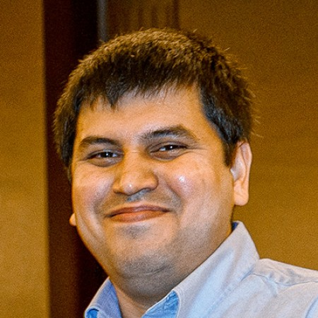
Director · PIVibhav Gogate
Professor of Computer Science and co-director of the Center for Machine Learning. Probabilistic inference, tractable models, and neuro-symbolic reasoning.
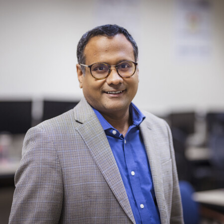
Co-Director · Co-PISriraam Natarajan
Professor of Computer Science and AAAI Fellow. Machine learning, statistical relational AI, and human-in-the-loop approaches.
Executive Council
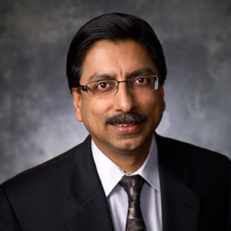
Gopal Gupta
Logic programming · Declarative AI
Sanda Harabagiu
Natural language understanding · Biomedical AI
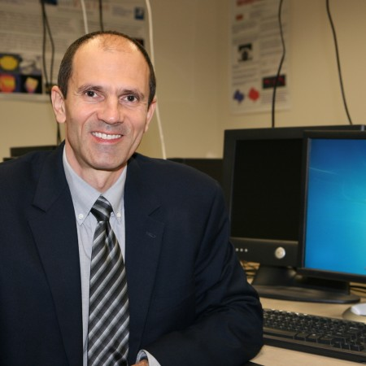
Ovidiu Daescu
Algorithms · Computational geometry
Feng Chen
Graph learning · Temporal data
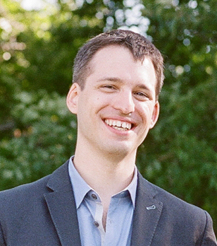
Nicholas Ruozzi
Algorithms · Optimization · Probabilistic models
Co-Principal Investigators
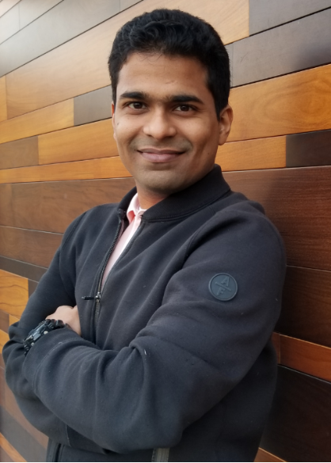
Rishabh Iyer
Optimization and decision-making
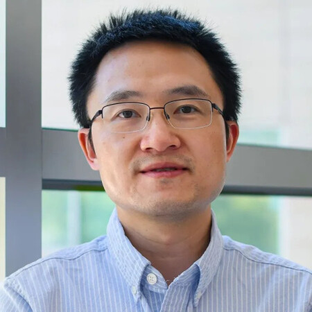
Yu Xiang
3D vision and robotics
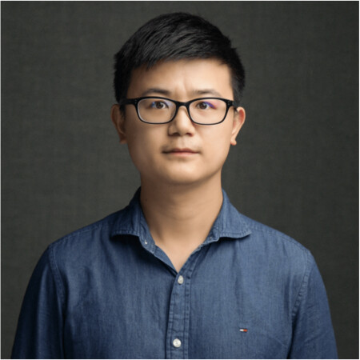
Yunhui Guo
Representation learning
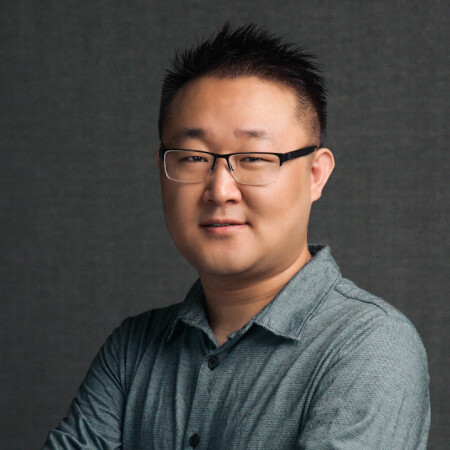
Yapeng Tian
Computer vision and multimodal learning
Zhiyu (Zoey) Chen
NLP and multimodal reasoning
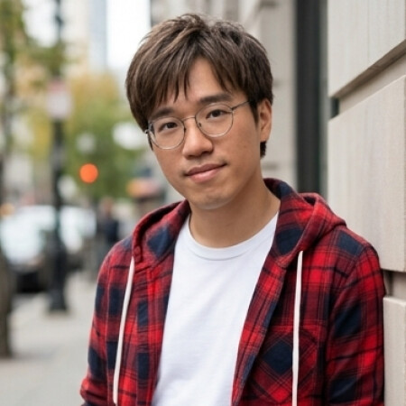
Vincent Ng
NLP
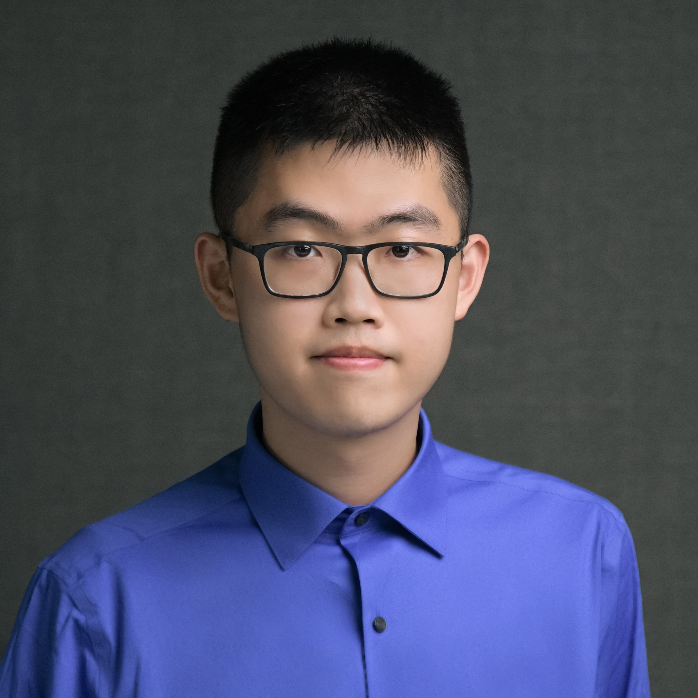
Xinya Du
NLP
Affiliated Faculty
Faculty affiliated with FAIR span computer science, cognitive science, engineering, philosophy, biology, and public policy.
Richard Golden
Affiliated faculty
Yonas Tadasse
Affiliated faculty
Justin Ruths
Affiliated faculty
Xiaohu Guo
Affiliated faculty
Lakshman Tamil
Affiliated faculty
Jonathan Tsou
Affiliated faculty
Meenakshi Maitra
Affiliated faculty
Jey Veerasamy
Affiliated faculty
Doug DeGroot
Affiliated faculty
Elmer Salazar
Affiliated faculty
Jie Zhang
Affiliated faculty
Yanwen Xu
Affiliated faculty
Patrick Brandt
Affiliated faculty
Latifur Khan
Affiliated faculty
Laisuo Su
Affiliated faculty
External Affiliates
Kristian Kersting
Professor and head of hessian.AI · TU Darmstadt · AAAI, EurAI, and AAIA Fellow
Guy Van den Broeck
Professor and Samuel Fellow · UCLA
Ronald Parr
Professor · Duke University · AAAI Fellow
Predrag Radivojac
Professor · Northeastern University · ISMB Fellow
Janardhan Doppa
Huie-Rogers Endowed Chair Professor of Computer Science and Berry Distinguished Professor in Engineering · Washington State University
Prasad Tadepalli
Professor · Oregon State University
Nick Mattei
Assistant Professor · Tulane University
Sameer Singh
Professor · University of California, Irvine
Jay Pujara
Principal Scientist · Information Sciences Institute
David Haas
Professor · Indiana University School of Medicine
Lakshmi Raman
Professor · UT Southwestern
Mausam
Professor · Indian Institute of Technology Delhi · AAAI Fellow
Parag Singla
Professor and Head, School of AI · Indian Institute of Technology Delhi
Balaraman Ravindran
Professor and Head, Wadhwani School of AI · Indian Institute of Technology, Madras